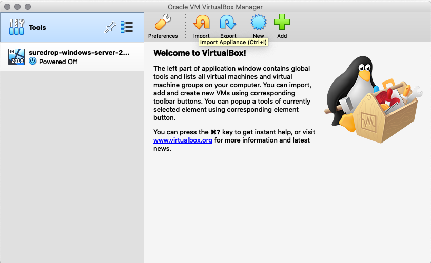
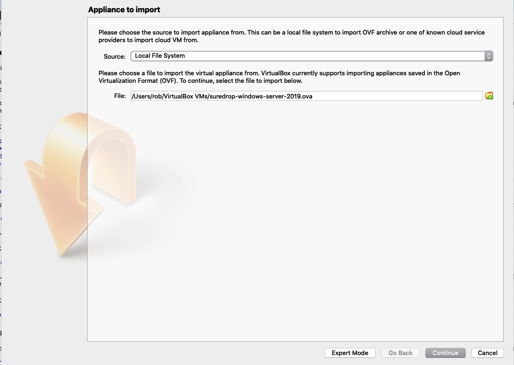
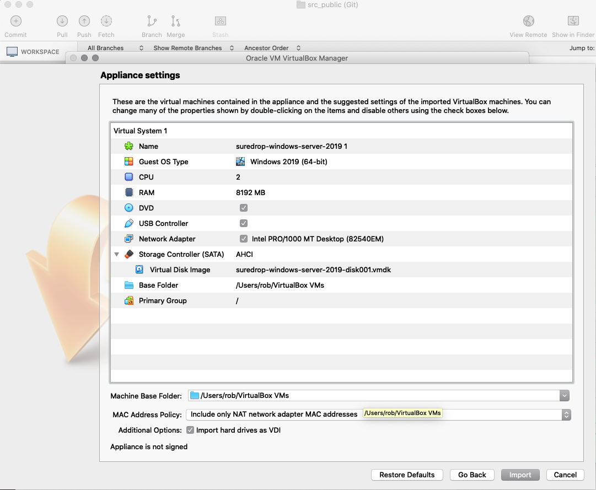
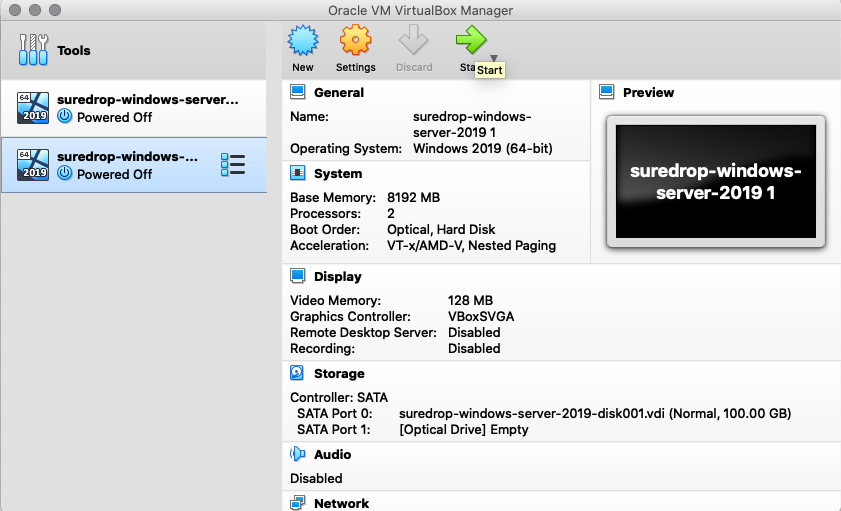
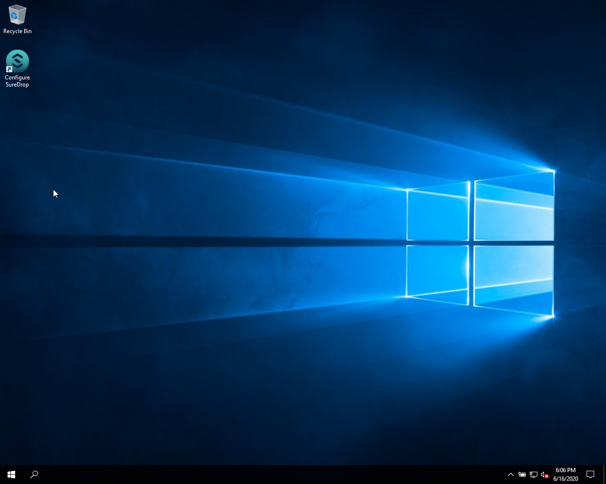
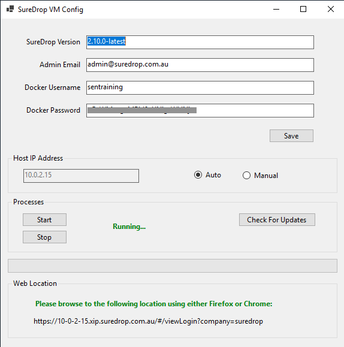
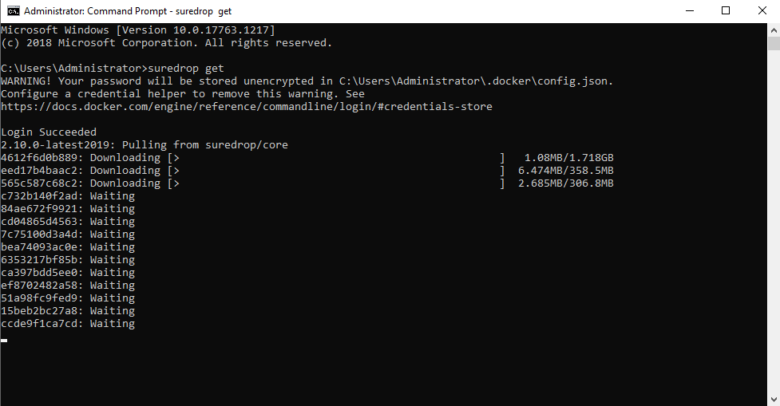
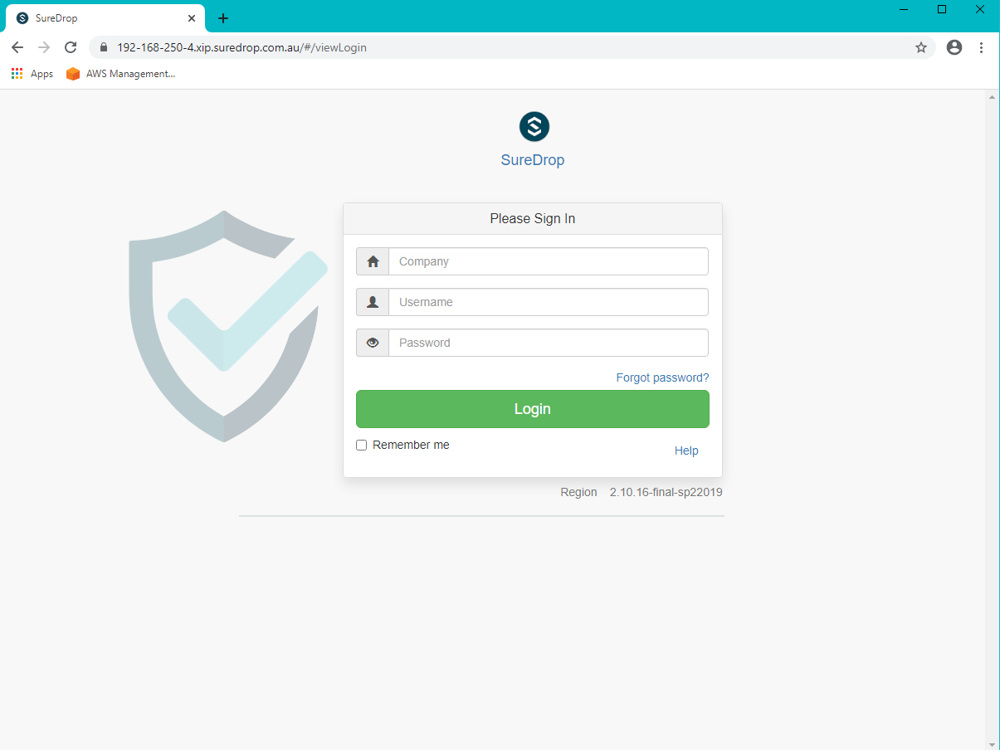
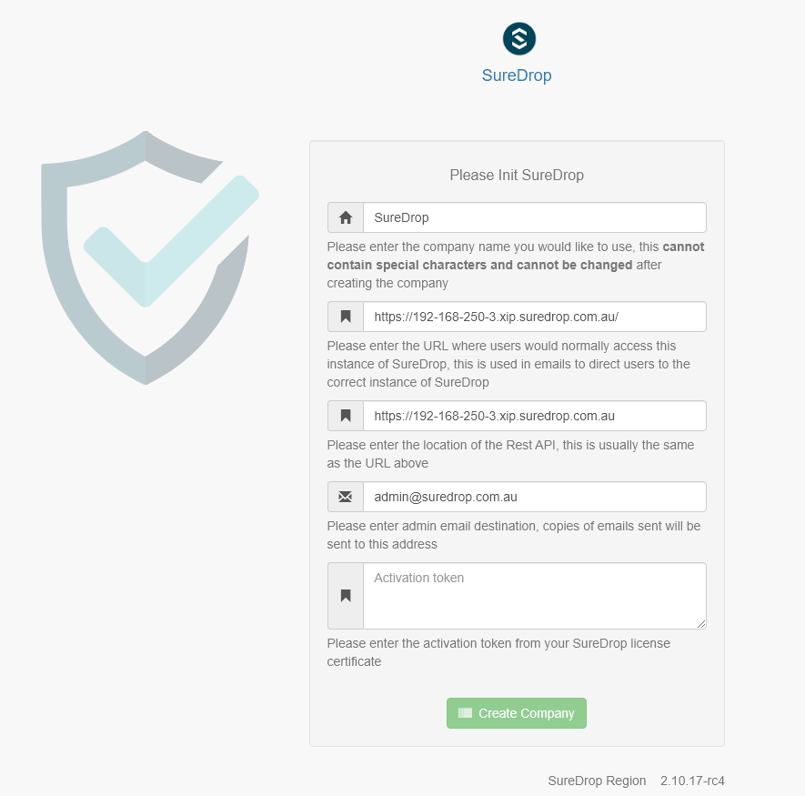
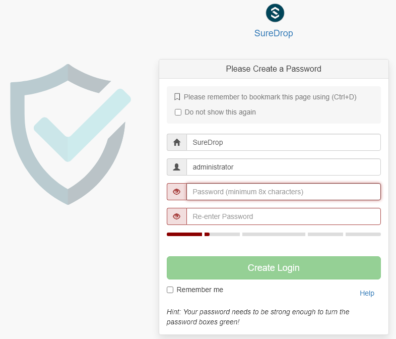

New Install - Virtual Machine
Before starting this install you will need to contact support and obtain the following:
Username
Password
Activation Key
The Version of SureDrop to Install
A share pointing to the location of the Virtual Box appliance
The password for the appliance
Download the Virtual Box Appliance from the share provided.
This appliance is an .ova file about 13Gb in size
While the ova is downloading install Oracle Virtual Box from the following location.
https://www.virtualbox.org/wiki/Downloads
After you have installed Virtual Box and downloaded the .ova file, import the appliance.
Hint
Remember to change the name to something that you recognize
This should take about 10 minutes to import
Once is has imported run the new virtual Machine
Note
You will need the password to log in provided by the SureDrop team
Run the
Configure SureDropapplication on the desktop.Stopthe Processes if they areRunning...Enter the information into the top four fields that was provided on your license certificate and click on
SaveConfirm that the IP address is correct, if it is not then check
Manualand enter the correct IP address of the VM.Click on the
Check For Updates.Warning
This may take up to an hour.
Hint
If you want to see the progress of this command run a
cmd promptand run the following command:c:\Users\Administrator>suredrop get
Click on
StartBrowse to the url displayed at the bottom of the application
https://XXX-XXX-XXX-XXX.xip.suredrop.com.au
For example if the IP address of this host is
192.168.250.3, then use the following:https://192-168-250-3.xip.suredrop.com.au
If everything is successful then the previous step should have opened the login page in your browser with 3 empty fields, company name, user name, and password.
Enter SureDrop in the first input box (for Company Name) and press tab or click on the next input box.
Note
The initial company name is SureDrop
This will take you to the create company page which allows the user to configure certain critical parameters of the system. The Create Company button is intentionally disabled at this stage.
Hint
You may need to wait a few seconds for the create company page to appear
Once you’ve filled the Activation Token from your SureDrop license certificate in the last input box of this page, then the Create Company button will be enabled and you should click on it. Once the company is created, SureDrop will automatically redirect you to the login page to create your administrator account password and then login to the system.
SureDrop should now be operational on your own compute infrastructure.
For any questions or if you have any issues following this document, please email admin@suredrop.com.au.